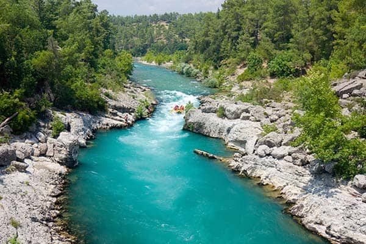

Our goal, is to give customers an unforgetable experience they'll remember for years to come. We hope you'll choose to spend time at our luxury resort and white water rafting!

Our goal, is to give customers an unforgetable experience they'll remember for years to come. We hope you'll choose to spend time at our luxury resort and white water rafting!
We come from a long history of tax fraud and money laundering, and we are pround to keep up the tradition. We started back in 1952 with just a small family owned business and have grown into a world renowed resort known for our beloved river rafting adventures!
We started back in 1952 with just a small family owned business and have grown into a world renowed resort known for our beloved river rafting adventures! We come from a long history of tax fraud and money laundering, and we are pround to keep up the tradition.